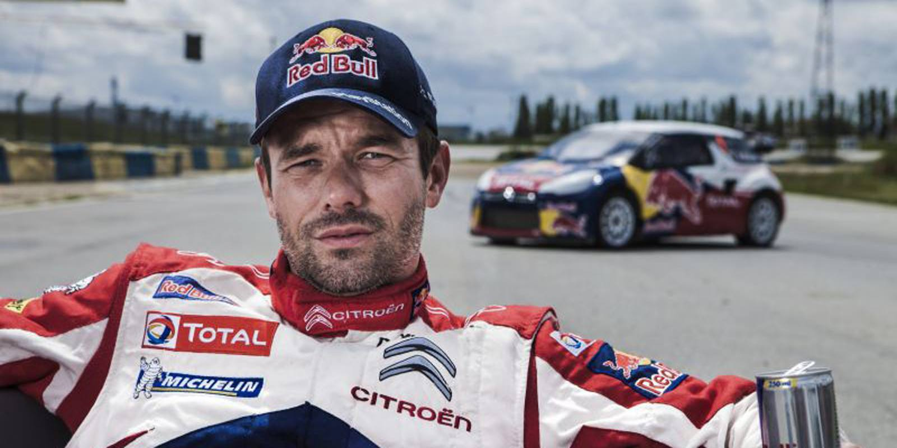

Le rallye est une discipline de sport automobile.

Les rallyes ont pour particularité de ne pas se pratiquer sur un circuit mais sur des routes fermées au public pour l'occasion. Les épreuves se déroulent sur différents types de terrains (terre, neige, asphalte, etc), et sont composées de plusieurs étapes (parfois courues de nuit).
Les épreuves chronométrées sont appelées épreuves spéciales, les parties non chronométrées sont appelées étapes de liaison.
Les véhicules utilisés sont généralement des voitures de production (en l'occurrence des modèles de série dits voitures de tourisme) modifiés suivant les possibilités offertes par le règlement.
Le pilote du véhicule est assisté par un copilote qui lui annonce les caractéristiques de la route à l'avance. Le gagnant est généralement déterminé par l'addition des temps pour effectuer les épreuves spéciales, bien que dans certains rallyes, le gagnant soit déterminé par un temps idéal pour effectuer les épreuves spéciales.